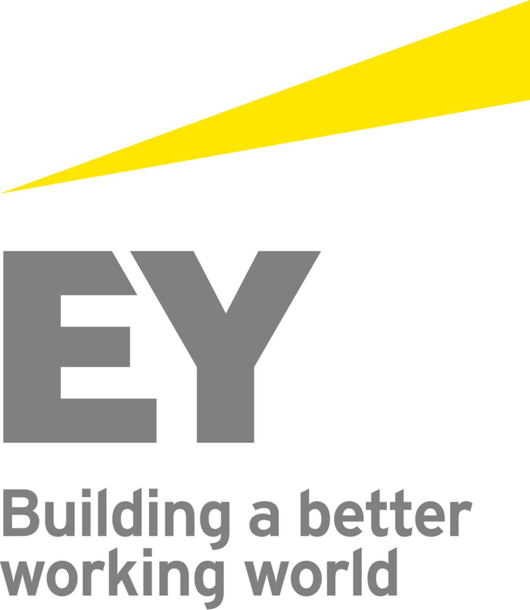

SmartDate: Dating Recommender System

A dating recommendation system: Data mining from 50 regions from around the globe using tinder and OkCupid. Recommendations based on scores using knowledge graph. Used Deep Knowledge-Aware Network and Collaborative filtering for knowledge inference and to make recommendations.
See Code:Github link
Tax Guide Query-Response Recommendion System
This project was a part of the EY Silver Badge AI Challenge. An interactive system for recommendations from TAX GUIDE was developed using BM25+ model. The data was pre-processed and bag of words approach was combined with the knowledge of n-grams and POS tags. A flask-python based website was deployed on the SAP cloud.
See Documentation:Project Report
Lip Reading

This project aims at tracking the lip region based on colour and shape information. This project begins with the videos being shot focused basically to the lip area. The video thus obtained will be segmented to frames which are used for designing and implementing the experimental models. Further, the extracted images will be processed using MATLAB to correlate every lip image to its equivalent syllable. The final output of this system is the text display of the alphabet spoken by the speaker. The experimental results have been tested on different frames under constraints of illumination condition and head motion.
See Code:Github link
See Report:Google Docx
Breast Cancer Classification